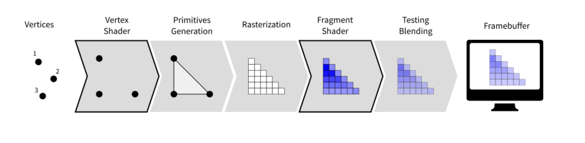
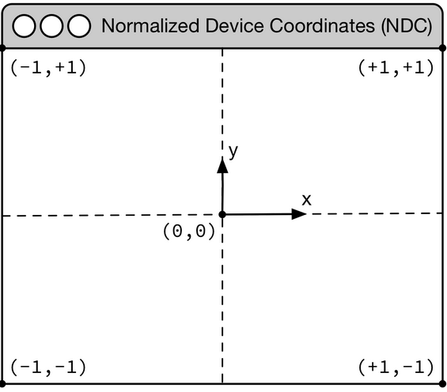
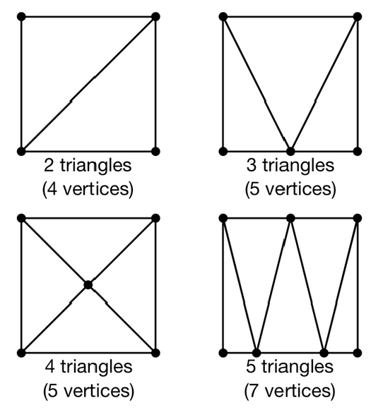
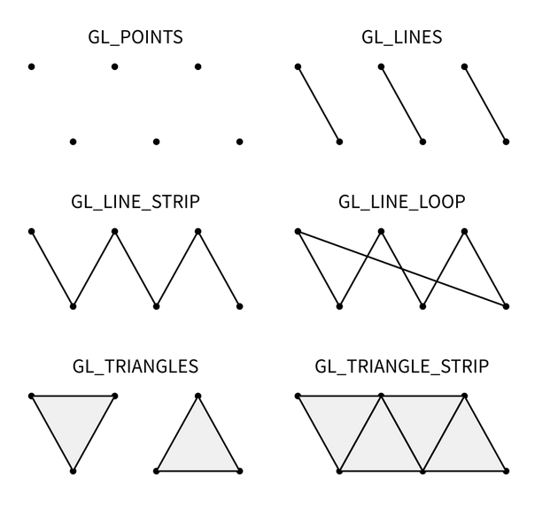
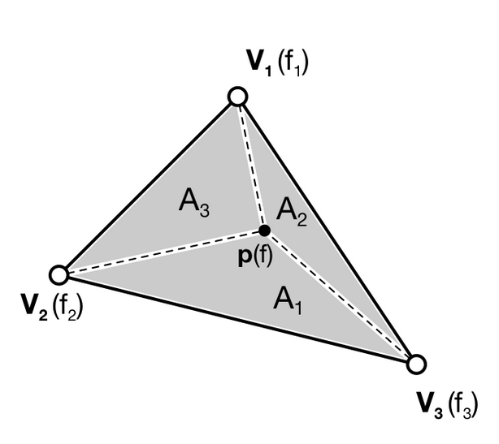
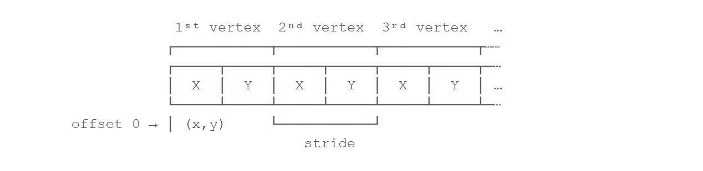
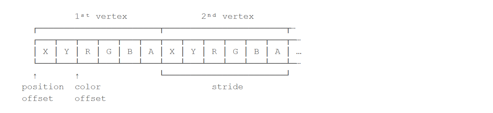

OpenGL with PySide6
Introduction
This is a small tutorial how to program OpenGL with PySide6. Please note that I am an absolute OpenGL beginner. I have simply ported Candle GCode viewer from (Qt) c++ to python. This is been a good introduction in OpenGL for me.
But trying to port jsCut gcode simulator (javascript) to python was something harder. Infact, I have not yet succeeded, althought the javascript code is only 800 lines of code. There are there 3 different shader programs with one (or two!) with a texture, that allows to simulate the milling process. It's quite impressive and unfortunately from the code I have not yet understood how the texture allows to simulate the milling process. Probably this is the cause I'm still unsuccessfull...
Moreover I do not believe that the python code will be less that the javascript code, although this is oft the case when translating javascript to python. Maybe the webgl API is here particularely well designed and compct.
This led me to write this small tutorial. I am picking for it from the internet the pages I found interesting and best explained.
The first is an excellent introduction to OpenGL, but unfortunately it diverges from its goal after the first chapters. It uses its own magic "glumpy" library to encapsulate most of OpenGL, for me too much python magic. But most important, it does not explain how to use the glumpy/gloo magic inside an PySide (Qt) application.
The latter is a very nice comparaison (in c++) of raw OpenGL versus the Qt "port", where Qt encapsulates -partly- OpenGL in its own classes, leading to a more compact code. So I will also "steal" from there, but making the comparaison in python.
In both case I will add my own comments to the original text, for what I consider to be important!
OpenGL Primer
The graphic pipeline
If you want to understand modern OpenGL, you have to understand the graphic pipeline and shaders. Shaders are pieces of program (using a C-like language) that are build onto the GPU and executed during the rendering pipeline. Depending on the nature of the shaders (there are many types depending on the version of OpenGL you're using), they will act at different stage of the rendering pipeline. To simplify this tutorial, we'll use only vertex and fragment shaders as shown below:
A vertex shader acts on vertices and is supposed to output the vertex position (gl_Position) on the viewport (i.e. screen). A fragment shader acts at the fragment level and is supposed to output the color (gl_FragColor) of the fragment. Hence, a minimal vertex shader is:
void main()
{
gl_Position = vec4(0.0,0.0,0.0,1.0);
}void main()
{
gl_FragColor = vec4(0.0,0.0,0.0,1.0);
}These two shaders are not very useful because the first shader will always output the null vertex (gl_Position is a special variable) while the second will only output the black color for any fragment (gl_FragColor is also a special variable). We'll see later how to make them to do more useful things.
One question remains: when are those shaders executed exactly ? The vertex shader is executed for each vertex that is given to the rendering pipeline (we'll see what does that mean exactly later) and the fragment shader is executed on each fragment (= pixel) that is generated after the vertex stage. For example, in the simple figure above, the vertex would be called 3 times , once for each vertex (1,2 and 3) while the fragment shader would be executed 21 times, once for each fragment.
Buffers
The next question is thus where do those vertices comes from ? The idea of modern GL is that vertices are stored on the CPU and need to be uploaded to the GPU before rendering. The way to do that is to build buffers onto the CPU and to send these buffers onto the GPU. If your data does not change, no need to upload them again. That is the big difference with the previous fixed pipeline where data were uploaded at each rendering call (only display lists were built into GPU memory).
But what is the structure of a vertex ? OpenGL does not assume anything about your vertex structure and you're free to use as many information you may need for each vertex. The only condition is that all vertices from a buffer have the same structure (possibly with different content). This again is a big difference with the fixed pipeline where OpenGL was doing a lot of complex rendering stuff for you (projections, lighting, normals, etc.) with an implicit fixed vertex structure. The good news is that you're now free to do anything you want, but the bad news is that you have to program just everything.
Let's take a simple example of a vertex structure where we want each vertex to hold a position and a color. The easiest way to do that in python is to use a structured array using numpy:
data = numpy.zeros(4, dtype = [ ("position", np.float32, 3),
("color", np.float32, 4)] )We just created a CPU buffer with 4 vertices, each of them having a position (3 floats for x,y,z coordinates) and a color (4 floats for red, blue, green and alpha channels). Note that we explicitly chose to have 3 coordinates for position but we may have chosen to have only 2 if were to work in two-dimensions. Same holds true for color. We could have used only 3 channels (r,g,b) if we did not want to use transparency. This would save some bytes for each vertex. Of course, for 4 vertices, this does not really matter but you have to realize it will matter if your data size grows up to one or ten million vertices.
Variables
Now, we need to explain our shaders what to do with these buffers and how to connect them together. So, let's consider again a CPU buffer of 4 vertices using 2 floats for position and 4 floats for color:
data = numpy.zeros(4, dtype = [ ("position", np.float32, 2),
("color", np.float32, 4)] )As we send raw "buffers" to the GPU, the shader program has no idea of the structure of the buffer (that the first 2 floats are for the position and the last 4 floats are for the color, and that an element is made of 6 floats.
We need to tell the vertex shader that it will have to handle vertices where a position is a tuple of 2 floats and color is a tuple of 4 floats. This is precisely what attributes are meant for. Let us change slightly our previous vertex shader:
We have not yet told OpenGL how to interpret the buffer, but the attributes will help. Infact we have to tell OpenGL from python (from where sonst) these informations.
attribute vec2 position;
attribute vec4 color;
void main()
{
gl_Position = vec4(position, 0.0, 1.0);
}This vertex shader now expects a vertex to possess 2 attributes, one named position and one named color with specified types (vec2 means tuple of 2 floats, vec3 means tuple of 3 floats and vec4 means tuple of 4 floats). It is important to note that even if we labeled the first attribute position, this attribute is not yet bound to the actual position in the numpy array. We could have declared first the color, then the position. We'll need to do it explicitly at some point in our program and there is no magic that will bind the numpy array field to the right attribute, you'll have to do it yourself, but we'll see that later. (Yes!)
The second type of information we can feed the vertex shader is the uniform that may be considered as constant value (across all the vertices). Let's say for example we want to scale all the vertices by a constant factor scale, we would thus write:
uniform float scale;
attribute vec2 position;
attribute vec4 color;
void main()
{
gl_Position = vec4(position*scale, 0.0, 1.0);
}Last type is the varying type that is used to pass information between the vertex stage and the fragment stage. So let us suppose (again) we want to pass the vertex color to the fragment shader, we now write:
uniform float scale;
attribute vec2 position;
attribute vec4 color;
varying vec4 v_color;
void main()
{
gl_Position = vec4(position*scale, 0.0, 1.0);
v_color = color;
}and then in the fragment shader, we write:
varying vec4 v_color;
void main()
{
gl_FragColor = v_color;
}The question is what is the value of v_color inside the fragment shader ? If you look at the figure that introduced the gl pipeline, we have 3 vertices and 21 fragments. What is the color of each individual fragment ?
The answer is the interpolation of all 3 vertices color. This interpolation is made using the distance of the fragment to each individual vertex. This is a very important concept to understand. Any varying value is interpolated between the vertices that compose the elementary item (mostly, line or triangle).
Ok, enough for now, we'll see an explicit example in the next chapter.
Preliminaries
The main difficulty for newcomers in programming modern OpenGL is that it requires to understand a lot of different concepts at once and then, to perform a lot of operations before rendering anything on screen. This complexity implies that there are many places where your code can be wrong, both at the conceptual and code level. To illustrate this difficulty, we'll program our first OpenGL program using the raw interface and our goal is to display a simple colored quad (i.e. a red square).
Normalize Device Coordinates
Before even diving into actual code, it is important to understand first how OpenGL handles coordinates. More precisely, OpenGL considers only coordinates (x,y,z) that fall into the space where -1 ≤ x,y,z ≤ +1. Any coordinates that are outside this range will be discarded or clipped (i.e. won't be visible on screen). This is called Normalized Device Coordinates, or NDC for short. This is something you cannot change because it is part of the OpenGL API and implemented in your hardware (GPU). Consequently, even if you intend to render the whole universe, you'll have utlimately to fit it into this small volume.
The second important fact to know is that x coordinates increase from left to right and y coordinates increase from bottom to top. For this latter one, it is noticeably different from the usual convention and this might induce some problems, especially when you're dealing with the mouse pointer whose y coordinate goes the other way around.
Triangulation
Triangulation of a surface means to find a set of triangles, which covers a given surface. This can be a tedious process but fortunately, there exist many different methods and algorithms to perform such triangulation automatically for any 2D or 3D surface. The quality of the triangulation is measured in terms of the closeness to the approximated surface, the number of triangles necessary (the smaller, the better) and the homogeneity of the triangles (we prefer to have triangles that have more or less the same size and to not have any degenerated triangle).
In our case, we want to render a square and we need to find the proper triangulation (which is not unique as illustrated on the figure). Since we want to minimize the number of triangles, we'll use the 2 triangles solution that requires only 4 (shared) vertices corresponding to the four corners of the quad. However, you can see from the figure that we could have used different triangulations using more vertices, and later in this book we will just do that (but for a reason).
Considering the NDC, our quad will thus be composed of two triangles:
- One triangle described by vertices (-1,+1), (+1,+1), (-1,-1)
- One triangle described by vertices (+1,+1), (-1,-1), (+1,-1)
Here we can see that vertices (-1,-1) and (+1,+1) are common to both triangles. So instead of using 6 vertices to describe the two triangles, we can re-use the common vertices to describe the whole quad. Let's name them:
- V₀: (-1,+1)
- V₁: (+1,+1)
- V₂: (-1,-1)
- V₃: (+1,-1)
Our quad can now be using triangle (V₀,V₁,V₂) and triangle (V₁,V₂,V₃). This is exactly what we need to tell OpenGL.
GL Primitives
Ok, now things are getting serious because we need to actually tell OpenGL what to do with the vertices, i.e. how to render them? What do they describe in terms of geometrical primitives? This is quite an important topic since this will determine how fragments will actually be generated as illustrated on the image below:
Mostly, OpenGL knows how to draw (ugly) points, (ugly) lines and (ugly) triangles. For lines and triangles, there exist some variations depending if you want to specify very precisely what to draw or if you can take advantage of some implicit assumptions. Let's consider lines first for example. Given a set of four vertices (V₀,V₁,V₂,V₃), you migh want to draw segments (V₀,V₁)``(V₂,V₃) using GL_LINES or a broken line (V₀,V₁,V₂,V₃) using using GL_LINE_STRIP or a closed broken line (V₀,V₁,V₂,V₃,V₀,) using GL_LINE_LOOP. For triangles, you have the choices of specifying each triangle individually using GL_TRIANGLES or you can tell OpenGL that triangles follow an implicit structure using GL_TRIANGLE_STRIP. For example, considering a set of vertices (Vᵢ), GL_TRIANGLE_STRIP will produce triangles (Vᵢ,Vᵢ₊₁,Vᵢ₊₂). There exist other primitives but we won't used them in this book because they're mainly related to geometry shaders that are not introduced.
If you remember the previous section where we explained that our quad can be described using using triangle (V₀,V₁,V₂) and triangle (V₁,V₂,V₃), you can now realize that we can take advantage or the GL_TRIANGLE_STRIP primitive because we took care of describing the two triangles following this implicit structure.
Interpolation
The choice of the triangle as the only surface primitive is not an arbitrary choice, because a triangle offers the possibility of having a nice and intuitive interpolation of any point that is inside the triangle. If you look back at the graphic pipeline as it has been introduced in the Modern OpenGL section, you can see that the rasterisation requires for OpenGL to generate fragments inside the triangle but also to interpolate values (colors on the figure). One of the legitimate questions to be solved is then: if I have a triangle (V₁,V₂,V₃), each summit vertex having (for example) a different color, what is the color of a fragment p inside the triangle? The answer is barycentric interpolation as illustrated on the figure on the right.
More precisely, for any point p inside a triangle A = (V₁,V₂,V₃), we consider triangles:
- A₁ = (P,V₂,V₃)
- A₂ = (P,V₁,V₃)
- A₃ = (P,V₁,V₂)
And we can define (using area of triangles):
- 𝛌₁ = A₁/A
- 𝛌₂ = A₂/A
- 𝛌₃ = A₃/A
Now, if we attach a value f₁ to vertex V₁, f₂ to vertex V₂ and f₃ to vertex V₃, the interpolated value f of p is given by: f = 𝛌₁f₁ + 𝛌₂f₂ + 𝛌₃f₃ You can check by yourself that if the point p is on a border of the triangle, the resulting interpolated value f is the linear interpolation of the two vertices defining the segment the point p belongs to.
This barycentric interpolation is important to understand even if it is done automatically by OpenGL (with some variation to take projection into account). We took the example of colors, but the same interpolation scheme holds true for any value you pass from the vertex shader to the fragment shader. And this property will be used and abused in this book.
Quick Start
Having reviewed some important OpenGL concepts, it's time to code our quad example. But, before even using OpenGL, we need to open a window with a valid GL context. Definition of a GL context? This can be done using a toolkit such as Gtk, Qt or Wx or any native toolkit (Windows, Linux, OSX). Unfortunately, the Tk Python interface does not allow to create a GL context and we cannot use it. Note there also exists dedicated toolkits such as GLFW or GLUT and the advantage of GLUT is that it's already installed alongside OpenGL. Even if it is now deprecated, we'll use GLUT (bad luck for python users, the GLUT python module is not easely installed) since it's a very lightweight toolkit and does not require any extra package. Here is a minimal setup that should open a window with garbage on it (since we do not even clear the window):
import sys
import OpenGL.GL as gl
import OpenGL.GLUT as glut
def display():
glut.glutSwapBuffers()
def reshape(width,height):
gl.glViewport(0, 0, width, height)
def keyboard( key, x, y ):
if key == b'\x1b':
sys.exit( )
glut.glutInit()
glut.glutInitDisplayMode(glut.GLUT_DOUBLE | glut.GLUT_RGBA)
glut.glutCreateWindow('Hello world!')
glut.glutReshapeWindow(512,512)
glut.glutReshapeFunc(reshape)
glut.glutDisplayFunc(display)
glut.glutKeyboardFunc(keyboard)
glut.glutMainLoop()The glutInitDisplayMode tells OpenGL what are the GL context properties. At this stage, we only need a swap buffer (we draw on one buffer while the other is displayed) and we use a full RGBA 32 bits color buffer (8 bits per channel). The reshape callback informs OpenGL of the new window size while the display method tells OpenGL what to do when a redraw is needed. In this simple case, we just ask OpenGL to swap buffers (this avoids flickering). Finally, the keyboard callback allows us to exit by pressing the Escape key.
Writing shaders
Now that your window has been created, we can start writing our program, that is, we need to write a vertex and a fragment shader. For the vertex shader, the code is very simple because we took care of using the normalized device coordinates to describe our quad in the previous section. This means vertices do not need to be transformed. Nonetheless, we have to take care of sending 4D coordinates even though we'll transmit only 2D coordinates (x,y) or the final result will be undefined. For coordinate z we'll just set it to 0.0 (but any value would do) and for coordinate w, we set it to 1.0 (see section Basic Mathematics for the explanation). Note also the (commented) alternative ways of writing the shader.
attribute vec2 position;
void main()
{
gl_Position = vec4(position, 0.0, 1.0);
// or gl_Position.xyzw = vec4(position, 0.0, 1.0);
// or gl_Position.xy = position;
// gl_Position.zw = vec2(0.0, 1.0);
// or gl_Position.x = position.x;
// gl_Position.y = position.y;
// gl_Position.z = 0.0;
// gl_Position.w = 1.0;
}For the fragment shader, it is even simpler. We set the color to red which is described by the tuple (1.0, 0.0, 0.0, 1.0) in normalized RGBA notation. 1.0 for alpha channel means fully opaque.
void main()
{
gl_FragColor = vec4(1.0, 0.0, 0.0, 1.0);
// or gl_FragColor.rgba = vec4(1.0, 0.0, 0.0, 1.0);
// or gl_FragColor.rgb = vec3(1.0, 0.0, 0.0);
// gl_FragColor.a = 1.0;
}Compiling the program
We wrote our shader and we need now to build a program that will link the vertex and the fragment shader together. Building such program is relatively straightforward (provided we do not check for errors). First we need to request program and shader slots from the GPU:
program = gl.glCreateProgram()
vertex = gl.glCreateShader(gl.GL_VERTEX_SHADER)
fragment = gl.glCreateShader(gl.GL_FRAGMENT_SHADER)We can now ask for the compilation of our shaders into GPU objects and we log for any error from the compiler (e.g. syntax error, undefined variables, etc):
vertex_code = """
attribute vec2 position;
void main() { gl_Position = vec4(position, 0.0, 1.0); } """
fragment_code = """
void main() { gl_FragColor = vec4(1.0, 0.0, 0.0, 1.0); } """
# Set shaders source
gl.glShaderSource(vertex, vertex_code)
gl.glShaderSource(fragment, fragment_code)
# Compile shaders
gl.glCompileShader(vertex)
if not gl.glGetShaderiv(vertex, gl.GL_COMPILE_STATUS):
error = gl.glGetShaderInfoLog(vertex).decode()
print(error)
raise RuntimeError("Vertex shader compilation error")
gl.glCompileShader(fragment)
if not gl.glGetShaderiv(fragment, gl.GL_COMPILE_STATUS):
error = gl.glGetShaderInfoLog(fragment).decode()
print(error)
raise RuntimeError("Fragment shader compilation error")Then we link our two objects in into a program and again, we check for errors during the process.
gl.glAttachShader(program, vertex)
gl.glAttachShader(program, fragment)
gl.glLinkProgram(program)
if not gl.glGetProgramiv(program, gl.GL_LINK_STATUS):
print(gl.glGetProgramInfoLog(program))
raise RuntimeError('Linking error')and we can get rid of the shaders, they won't be used again (you can think of them as .o files in C).
gl.glDetachShader(program, vertex)
gl.glDetachShader(program, fragment)Finally, we make program the default program to be ran. We can do it now because we'll use a single program in this example (What if we use many programs?) :
gl.glUseProgram(program)Uploading data to the GPU
Next, we need to build CPU data and the corresponding GPU buffer that will hold a copy of the CPU data (GPU cannot access CPU memory). In Python, things are grealty facilitated by NumPy that allows to have a precise control over number representations. This is important because GLES 2.0 floats have to be exactly 32 bits long and a regular Python float would not work (they are actually equivalent to a C double). So let us specify a NumPy array holding 4×2 32-bits float that will correspond to our 4×(x,y) vertices:
# Build data
data = np.zeros((4,2), dtype=np.float32))We then create a placeholder on the GPU without yet specifying the size:
# Request a buffer slot from GPU
buffer = gl.glGenBuffers(1)
# Make this buffer the default one
gl.glBindBuffer(gl.GL_ARRAY_BUFFER, buffer)We now need to bind the buffer to the current program, that is, for each attribute present in the vertex shader program, we need to tell OpenGL where to find the corresponding data (i.e. GPU buffer) and this requires some computations. More precisely, we need to tell the GPU how to read the buffer in order to bind each value to the relevant attribute. To do this, GPU needs to know what is the stride between 2 consecutive elements and what is the offset to read one attribute:
In our simple quad scenario, this is relatively easy to write because we have a single attribute ("position"). We first require the attribute location inside the program and then we bind the buffer with the relevant offset.
stride = data.strides[0]
offset = ctypes.c_void_p(0)
loc = gl.glGetAttribLocation(program, "position")
gl.glEnableVertexAttribArray(loc)
gl.glBindBuffer(gl.GL_ARRAY_BUFFER, buffer)
gl.glVertexAttribPointer(loc, 2, gl.GL_FLOAT, False, stride, offset)From the shader program, we inform python about the (opaque) location of an attribute in this program. Then we "enable" the location, we bind the buffer, and finally give from python to the shader program the information about the buffer stride and offsets.
Note that in theses lines, the numpy array is not involved (or rather said just its layout). We just set the structure of the "default" buffer.
See how the last line does this, but of course knowing that it refers to the given buffer just bound before (even if still empty!).
We're basically telling the program how to bind data to the relevant attribute. This is made by providing the stride of the array (how many bytes between each record) and the offset of a given attribute.
Let's now fill our CPU data and upload it to the newly created GPU buffer:
# Assign CPU data
data[...] = (-1,+1), (+1,+1), (-1,-1), (+1,-1)
# Upload CPU data to GPU buffer
gl.glBufferData(gl.GL_ARRAY_BUFFER, data.nbytes, data, gl.GL_DYNAMIC_DRAW)Here at the last line the shader program nor the buffer is not specified. Hopefully we have tell OpenGL which shader program is "active" (glUseProgram) and which is the current buffer (glBindBuffer).
Question: what is "GL_DYNAMIC_DRAW"?
Remark: At the time of defining the buffer, the buffer had an "unknown" size...
Rendering
We're done, we can now rewrite the display function:
def display():
gl.glClear(gl.GL_COLOR_BUFFER_BIT)
gl.glDrawArrays(gl.GL_TRIANGLE_STRIP, 0, 4)
glut.glutSwapBuffers()The 0,4 arguments in the glDrawArrays tells OpenGL we want to display 4 vertices from our current active buffer and we start at vertex 0. You should obtain the figure on the right with the same red (boring) color. The whole source ia available from code/chapter-03/glut-quad-solid.py.
The glDrawArrays function does not specify which buffer(s) is/are meant nor which program(s). Is it only be the current buffer, or all of them, and which program (or all of them)?
Answer: glDrawArrays will draw from the currently bound vertex attribute arrays, which are "created" and bound themselves with glVertexAttribPointer and glEnableVertexAttribArray, which do use the currently bound vertex buffer. It doesn't matter if the vertex attributes are all from one buffer or multiple buffers, and you don't need any particular vertex buffer to be bound when drawing; all the glDraw* functions care about is which vertex attribute arrays are enabled.
So see at the 3 consecutive calls glEnableVertexAttribArray / glBindBuffer / glVertexAttribPointer above. There can be many of then, and for all of them, the "attrib" will be drawn.
All these operations are necessary for displaying a single colored quad on screen and complexity can escalate pretty badly if you add more objects, projections, lighting, texture, etc. This is the reason why we'll stop using the raw OpenGL interface in favor of a library. We'll use the glumpy library, mostly because I wrote it, but also because it offers a tight integration with numpy. Of course, you can design your own library to ease the writing of GL Python applications.
Uniform color
In the previous example, we hard-coded the red color inside the fragment shader source code. But what if we want to change the color from within the Python program? We could rebuild the program with the new color but that would not be very efficient. Fortunately there is a simple solution provided by OpenGL: uniform. Uniforms, unlike attributes, do not change from one vertex to the other and this is precisely what we need in our case. We thus need to slightly modify our fragment shader to use this uniform color:
uniform vec4 color;
void main()
{
gl_FragColor = color;
}Of course, we also need to upload a color to this new uniform location and this is easier than for attribute because the memory has already been allocated on the GPU (since the size is know and does not depend on the number of vertices).
loc = gl.glGetUniformLocation(program, "color")
gl.glUniform4f(loc, 0.0, 0.0, 1.0, 1.0)If you run the new code/glut-quad-uniform-color.py example, you should obtain the blue quad as shown on the right.
Varying color
Until now, we have been using a constant color for the four vertices of our quad and the result is (unsurprisingly) a uniform red or blue quad. We can make it a bit more interesting though by assigning different colors to each vertex and see how OpenGL will interpolate colors. Our new vertex shader would need to be rewritten as:
attribute vec2 position;
attribute vec4 color;
varying vec4 v_color;
void main()
{
gl_Position = vec4(position, 0.0, 1.0);
v_color= color;
}We just added our new attribute color but we also added a new variable type: varying. This type is actually used to transmit a value from the vertex shader to the fragment shader. As you might have guessed, the varying type means this value won't be constant over the different fragments but will be interpolated depending on the relative position of the fragment in the triangle, as I explained in the Interpolation section. Note that we also have to rewrite our fragment shader accordingly, but now the v_color will be an input:
varying vec4 v_color;
void main()
{
gl_FragColor = color;
}We now need to upload vertex color to the GPU. We could create a new vertex dedicated buffer and bind it to the new color attribute, but there is a more interesting solution. We'll use instead a single numpy array and a single buffer, taking advantage of the NumPy structured array:
data = np.zeros(4, [("position", np.float32, 2),
("color", np.float32, 4)])
data['position'] = (-1,+1), (+1,+1), (-1,-1), (+1,-1)
data['color'] = (0,1,0,1), (1,1,0,1), (1,0,0,1), (0,0,1,1)Our CPU data structure is thus:
Binding the buffer is now a bit more complicated but it is made relatively easy thanks to NumPy:
stride = data.strides[0]
offset = ctypes.c_void_p(0)
loc = gl.glGetAttribLocation(program, "position")
gl.glEnableVertexAttribArray(loc)
gl.glBindBuffer(gl.GL_ARRAY_BUFFER, buffer)
gl.glVertexAttribPointer(loc, 2, gl.GL_FLOAT, False, stride, offset)
offset = ctypes.c_void_p(data.dtype["position"].itemsize)
loc = gl.glGetAttribLocation(program, "color")
gl.glEnableVertexAttribArray(loc)
gl.glBindBuffer(gl.GL_ARRAY_BUFFER, buffer)
gl.glVertexAttribPointer(loc, 4, gl.GL_FLOAT, False, stride, offset)Unfortunately, the case where there are 2 buffers for one program is not covered (as well as many buffers with many programs) as these cases are equally interesting, or even more, as this is the case when the application grows in complexity.
As stated above in the Question/Answer, keys are the glEnableVertexAttribArray and glVertexAttribPointer. To enable them, a glBindBuffer between the 2 calls is neccessary, especially if the arrays are from different buffers. But at the end, not the buffers are relevant, but the VertexAttribArrays/VertexAttribPointer.
We now quit this "first" tutorial and continue with the PySide6 OpenGL wrapper.